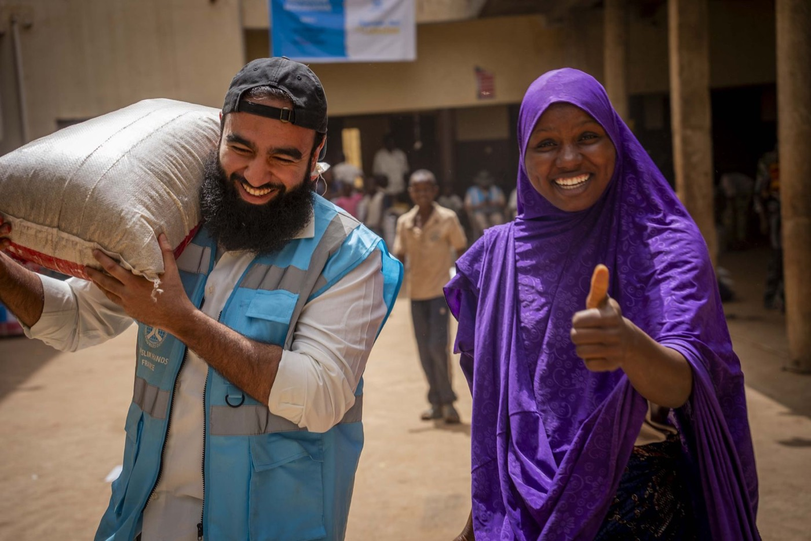
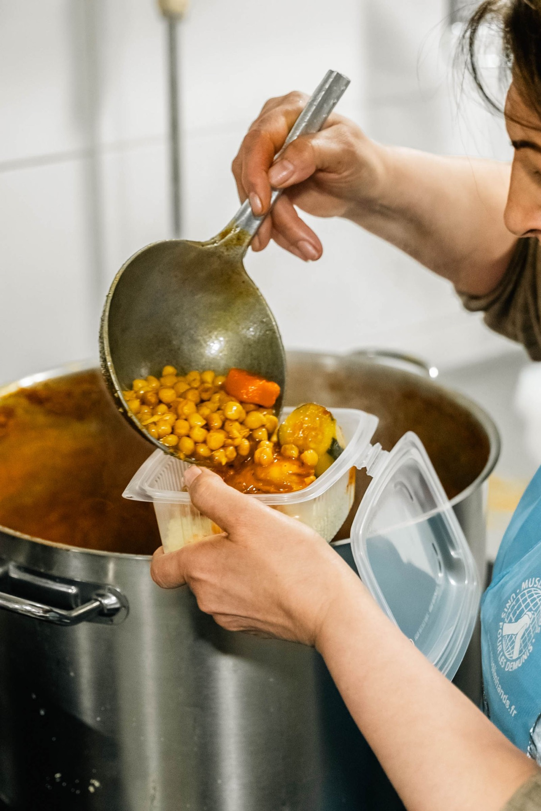
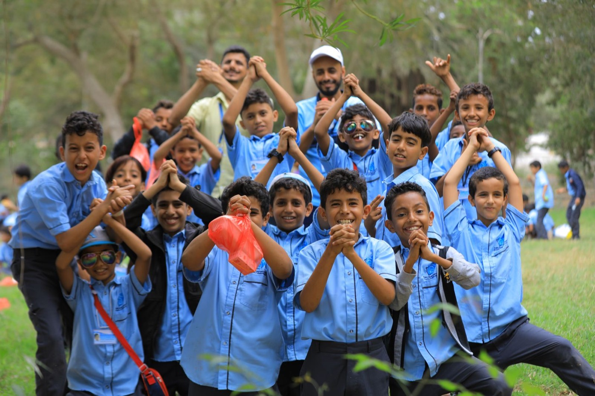
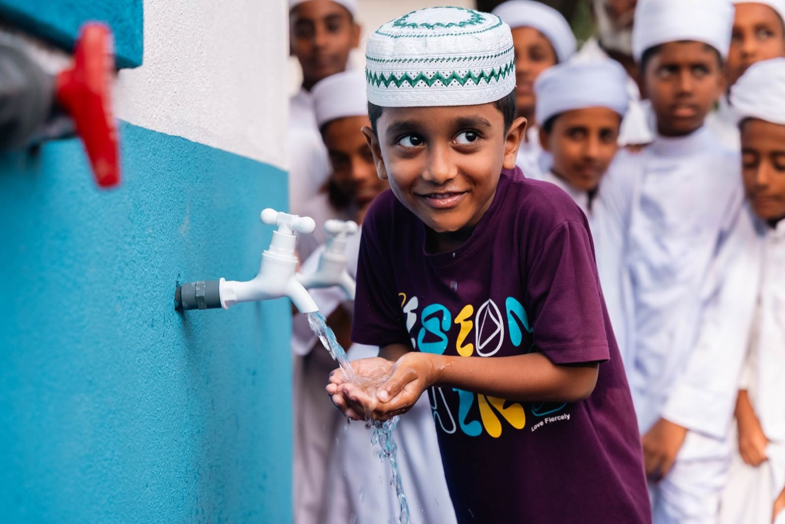
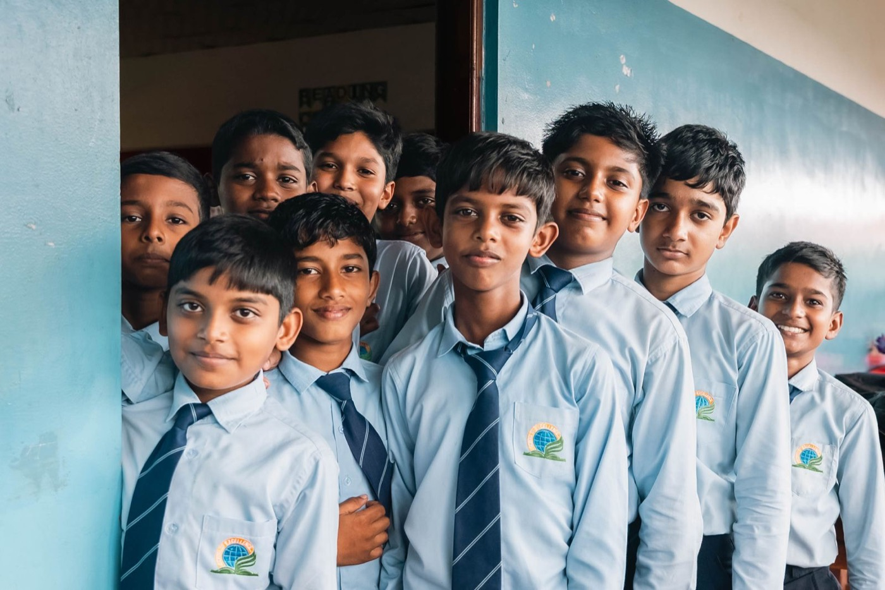
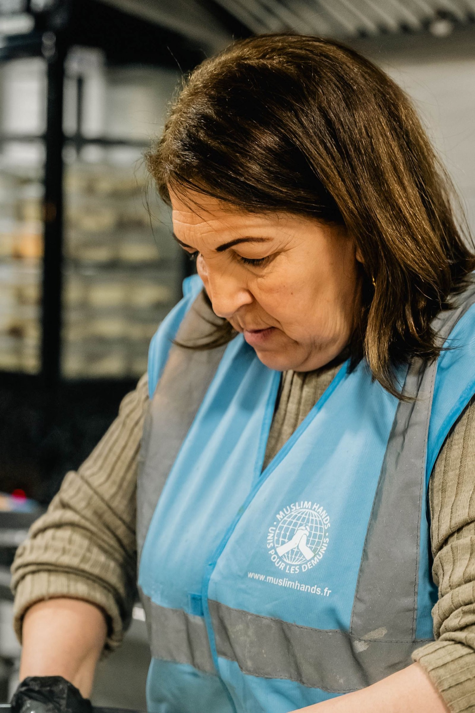
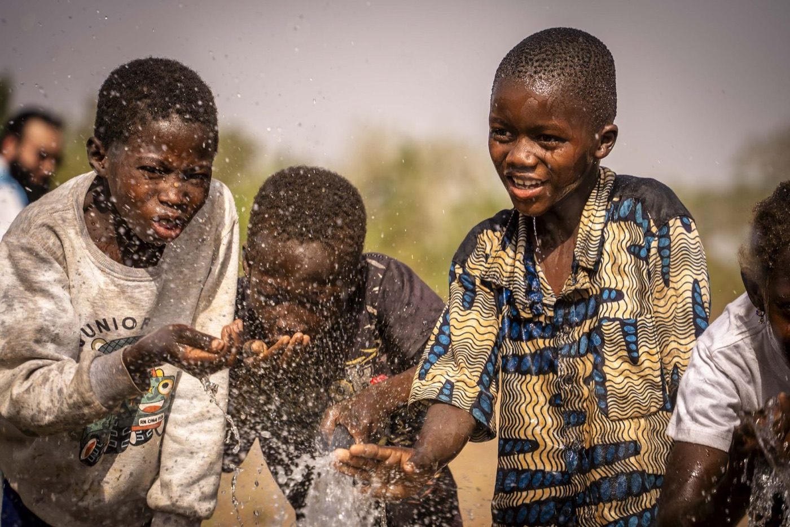
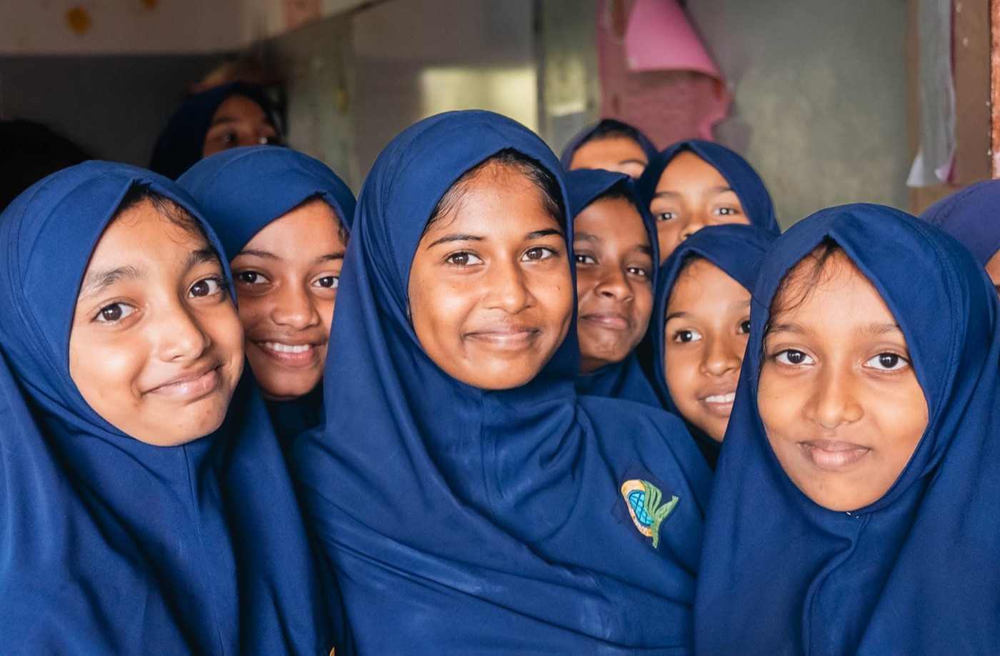

75 %
Jusqu’à 2 000 € de dons dans l’année
Pour vos dons au Fonds général, à La Fourchette Fraternelle et au parrainage d’orphelins. Au-delà de 2 000 €, le taux passe à 66 %.
Jusqu’au 31 décembre minuit pour donner et réduire votre impôt 2026.
Quand vous donnez à Muslim Hands France, une partie de votre don est déduite de votre impôt sur le revenu. Le taux dépend du projet que vous soutenez.
75 %
Pour vos dons au Fonds général, à La Fourchette Fraternelle et au parrainage d’orphelins. Au-delà de 2 000 €, le taux passe à 66 %.
66 %
Pour vos dons à l’eau et à l’éducation, et pour la part de vos dons au-delà de 2 000 €. Si vous dépassez les 20 %, l’excédent est reporté sur les 5 années suivantes.
En ligne, par téléphone au 01 49 48 05 05 ou par chèque.
Muslim Hands France vous délivre un reçu fiscal pour vos dons de l’année.
Dans la rubrique « Réductions et crédits d’impôt » de votre déclaration de revenus.
De 75 % ou 66 % du montant donné, selon le projet.
Indiquez un montant et le projet que vous souhaitez soutenir. Le calcul se fait dans votre navigateur : aucune donnée n’est envoyée.
Votre coût réel
25,00 €
soit 75,00 € de réduction d’impôt
Simulation indicative pour un particulier imposable en France, sur la base de vos seuls dons à Muslim Hands France. Taux 2026 : 75 % jusqu’à 2 000 € de dons (Fonds général, Fourchette Fraternelle, orphelins), 66 % au-delà et pour l’eau et l’éducation, dans la limite de 20 % du revenu imposable.
Sous chaque montant : votre coût réel après réduction d’impôt.





Depuis 2022, notre premier restaurant solidaire, né dans le quartier du Merlan, accueille chaque jour des personnes en situation de précarité : personnes sans abri, réfugiées, étudiantes ou familles en difficulté. Les repas sont préparés avec des produits frais, locaux et de saison.
Un deuxième restaurant ouvre bientôt dans le 3e arrondissement de Marseille. Il triplera notre capacité d’accueil.
« À La Fourchette Fraternelle, j’ai trouvé un accueil et des personnes qui m’ont rappelé que je n’étais pas seule. »
Oumayma, étudiante en master 1

En 2025, grâce à votre générosité, Muslim Hands France a fait construire 1 717 puits et forages et planté 4 110 arbres fruitiers, au bénéfice de 144 737 personnes. Certains forages sont équipés de pompes solaires.
« Nous n’aurions jamais imaginé qu’un forage puisse être construit dans notre village. »
Fanny Siyeni, mère de 4 enfants au Malawi

Éducation et suivi scolaire, repas quotidiens à l’école, transport, suivi médical, sorties : les enfants parrainés bénéficient d’une prise en charge complète, notamment en Palestine, au Liban, en Somalie, au Bangladesh et au Mali.
« Je suis tellement reconnaissant de pouvoir contribuer à mon tour aux actions de l’ONG qui m’a aidé durant mon enfance. »
Yaya, ancien élève orphelin, aujourd’hui salarié de Muslim Hands au Mali

Muslim Hands France vous délivre un reçu fiscal pour vos dons de l’année. Il indique le montant de vos dons et justifie votre réduction d’impôt : gardez-le précieusement.
Pour vos dons par chèque, n’oubliez pas d’indiquer votre numéro de donateur ou donatrice au dos et de libeller le chèque à l’ordre de « Muslim Hands ». Une question sur votre reçu ? Appelez-nous au 01 49 48 05 05.
Jusqu’au 31 décembre 2026 avant minuit. Seuls les dons versés au cours de l’année 2026 sont pris en compte pour vos revenus 2026. Après minuit, votre don comptera pour l’année suivante.
La loi prévoit un taux de 75 % pour les dons aux organismes qui aident les personnes en difficulté (repas, soins ou logement gratuits), dans la limite de 2 000 € de dons par an. Chez Muslim Hands France, ce taux s’applique au Fonds général, à La Fourchette Fraternelle et au parrainage d’orphelins. Les dons à l’eau et à l’éducation ouvrent droit à 66 %.
La part qui dépasse 2 000 € ouvre droit à une réduction de 66 %, dans la limite de 20 % de votre revenu imposable. Exemple : 3 000 € donnés au Fonds général = 1 500 € (75 % de 2 000 €) + 660 € (66 % de 1 000 €) = 2 160 € de réduction.
L’excédent n’est pas perdu : il est reporté sur les 5 années suivantes, dans les mêmes conditions.
Il s’agit d’une réduction d’impôt : elle diminue l’impôt que vous devez. Si vous n’êtes pas imposable, elle ne donne pas lieu à un remboursement. Votre don reste inestimable pour les personnes que vous aidez.
Chaque prélèvement compte pour l’année au cours de laquelle il est versé. Un parrainage de 39 € par mois, soit 468 € sur une année complète, vous coûte réellement 117 € après réduction d’impôt de 75 %.
Depuis le prélèvement à la source, l’administration fiscale verse chaque mi-janvier une avance de 60 % de certaines réductions d’impôt, dont celle pour les dons. Elle est calculée sur les dons de l’année précédente. Le solde est réglé l’été suivant, après votre déclaration. Vous pouvez la modifier depuis votre espace sur impots.gouv.fr.
Oui. Les dons des entreprises ouvrent droit à une réduction d’impôt de 60 % (jusqu’à 2 millions d’euros de dons), dans la limite de 20 000 € ou de 0,5 % du chiffre d’affaires hors taxes si ce montant est plus élevé. L’excédent est reportable sur 5 exercices. Contactez notre service donateurs au 01 49 48 05 05.
Oui : vous donnez directement sur muslimhands.fr, par une connexion sécurisée. Vous pouvez aussi donner par téléphone au 01 49 48 05 05 ou par chèque à l’ordre de « Muslim Hands », envoyé à Muslim Hands France, Bâtiment Energy 2, 155 rue du Dr Bauer, 93400 Saint-Ouen.
Sources : service-public.gouv.fr, impots.gouv.fr, BOFiP, entreprendre.service-public.gouv.fr.
Vos dons faits jusqu’au 31 décembre 2026 à minuit réduisent votre impôt 2026.
*Réduction d’impôt de 75 % dans la limite de 2 000 € de dons en 2026, puis de 66 % au-delà, dans la limite de 20 % du revenu imposable. Les dons affectés aux projets liés à l’accès à l’eau et à l’éducation ouvrent droit à une réduction de 66 %, et non de 75 %.